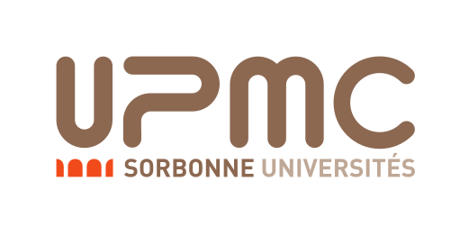

Formal Development of
Choreographic Business
Processes
Journée "Méthodes formelles et
processus métier", Paris, 16 octobre 2014
Pascal Poizat
Université Paris
Ouest Nanterre la Défense
Sorbonne Universités, UPMC Univ Paris 06,
UMR 7606, LIP6
CNRS, UMR 7606, LIP6
